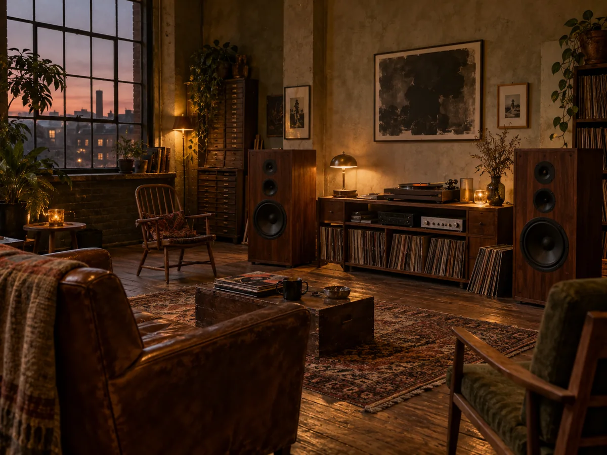

GOOD MUSIC.Wrong PLACE.
Great records. Unlikely rooms.
A night that goes somewhere else.
Some nights
stay with you.

TO BE THERE.
We take beautiful sound to places it doesn’t usually belong. An old printworks. A rooftop greenhouse. That room above the corner shop.
No VIP ropes. No endless playlists. Just a selector, a stack of records, and a room full of curious people.
A DIFFERENT WAY TO GO OUT ↗Next up↙
SMALL ROOMS. BIG FEELINGS.
AN IMAGINED SEASON / 2026.
AN IMAGINED PROGRAMME. NO TICKETS, NO BOOKINGS — JUST MUSICAL CURIOSITY.
NOT ANOTHER NIGHT OUT.
A WAY TO SWITCH ON.
Drop the needle.
Lift the room.
- 01
Leave the feed at the door.
Be here. The internet will still be there later.
- 02
Listen outside your lane.
Your next favourite record is probably a surprise.
- 03
Make room for someone.
Come solo. Leave with a new recommendation.
For the
record.
Little discoveries from
the spaces between tracks.
GOT A SPACE? A RECORD?
A SLIGHTLY STRANGE IDEA?
We’re all ears.
Offbeat is an independent design concept created by Silverside Web Solutions to explore expressive digital experiences for music and culture.
All sessions and spaces are imagined. Original AI-generated artwork.